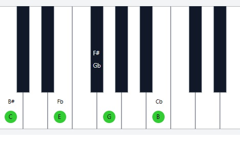
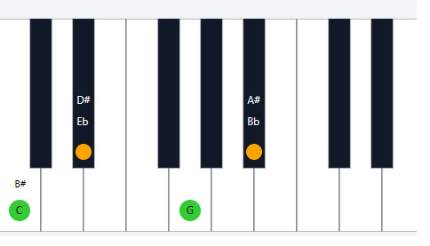
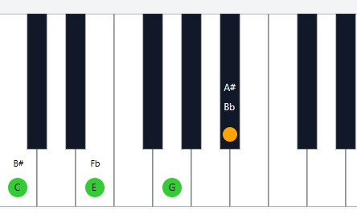
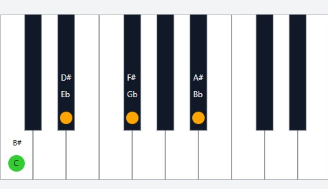
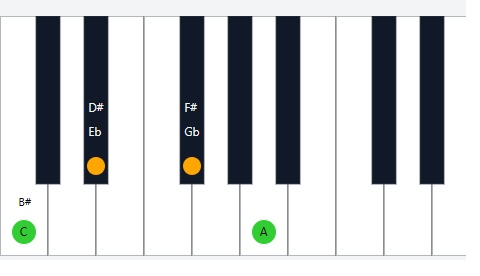
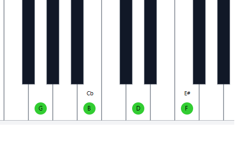
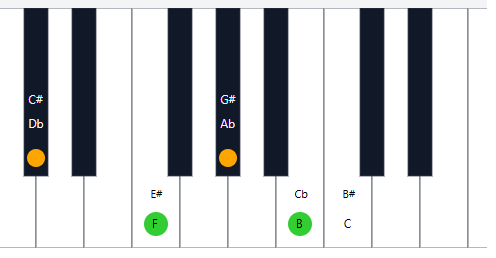
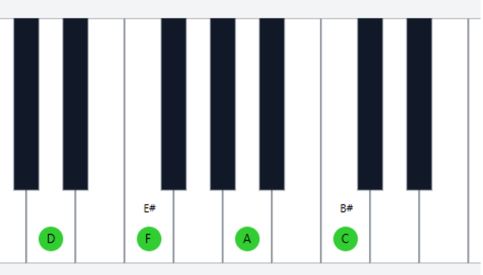

Desbloquea el Mundo del Piano Jazz
Aprende los fundamentos y técnicas para tocar jazz en el piano.
Comienza a Aprender AcordesPiano Virtual Interactivo
Acordes de Jazz para Piano
Los acordes son la base de la armonía en el jazz. Aquí exploraremos algunos de los acordes más comunes y cómo tocarlos en el piano.
Acorde Mayor Séptima (Maj7) - Cifrado: Maj7 o Δ7
Estructura: Tónica, 3ª Mayor, 5ª Justa, 7ª Mayor (1 - 3 - 5 - 7)
Sonido: Brillante y estable, común en el acorde I y IV de una tonalidad mayor.
Voicing básico (fundamental en la mano izquierda):
Mano Izquierda: Tónica
Mano Derecha: 3ª, 5ª, 7ª
Digitación sugerida (Mano Derecha): 1 - 2 - 3 - 5
Digitación sugerida (Mano Izquierda - solo tónica): 5

Acorde Menor Séptima (min7) - Cifrado: min7 o -7
Estructura: Tónica, 3ª Menor, 5ª Justa, 7ª Menor (1 - ♭3 - 5 - ♭7)
Sonido: Melancólico o suave, muy común como acorde ii en una tonalidad mayor o acorde i en una tonalidad menor.
Voicing básico (fundamental en la mano izquierda):
Mano Izquierda: Tónica
Mano Derecha: 3ª Menor, 5ª Justa, 7ª Menor
Digitación sugerida (Mano Derecha): 1 - 2 - 3 - 5
Digitación sugerida (Mano Izquierda - solo tónica): 5

Acorde Dominante Séptima (Dom7) - Cifrado: 7
Estructura: Tónica, 3ª Mayor, 5ª Justa, 7ª Menor (1 - 3 - 5 - ♭7)
Sonido: Tenso, crea una fuerte necesidad de resolver a la tónica. Es el acorde V en una tonalidad mayor o menor.
Voicing básico (fundamental en la mano izquierda):
Mano Izquierda: Tónica
Mano Derecha: 3ª Mayor, 5ª Justa, 7ª Menor
Digitación sugerida (Mano Derecha): 1 - 2 - 3 - 5
Digitación sugerida (Mano Izquierda - solo tónica): 5

Acorde Menor Séptima con Quinta Bemol (min7♭5) - Cifrado: min7♭5 o ø7
Estructura: Tónica, 3ª Menor, 5ª Disminuida, 7ª Menor (1 - ♭3 - ♭5 - ♭7)
Sonido: Inestable y oscuro, a menudo encontrado como el acorde ii en una tonalidad menor armónica o melódica, o como el acorde vii en una tonalidad mayor.
Voicing básico (fundamental en la mano izquierda):
Mano Izquierda: Tónica
Mano Derecha: 3ª Menor, 5ª Disminuida, 7ª Menor
Digitación sugerida (Mano Derecha): 1 - 2 - 3 - 5
Digitación sugerida (Mano Izquierda - solo tónica): 5

Acorde Disminuido Séptima (dim7) - Cifrado: dim7 o °7
Estructura: Tónica, 3ª Menor, 5ª Disminuida, 7ª Disminuida (1 - ♭3 - ♭5 - ♭♭7)
Sonido: Muy tenso y simétrico, con múltiples posibilidades de resolución. A menudo se usa como un acorde de paso o sustitución.
Voicing básico (fundamental en la mano izquierda):
Mano Izquierda: Tónica
Mano Derecha: 3ª Menor, 5ª Disminuida, 7ª Disminuida
Digitación sugerida (Mano Derecha): 1 - 2 - 3 - 5
Digitación sugerida (Mano Izquierda - solo tónica): 5

Dominantes Secundarios y Acordes Sustitutos
Más allá de la dominante principal (V7), el jazz utiliza dominantes secundarias y sustitutos para crear interés armónico y movimiento.
Dominantes Secundarios
Un dominante secundario es un acorde dominante (V7) que resuelve a un acorde que no es la tónica de la pieza. Funcionan creando una tensión temporal que "apunta" hacia el acorde al que preceden, como si ese acorde fuera momentáneamente la tónica.
Se cifran como "V7 de [el acorde al que resuelve]". Por ejemplo, V7/ii significa "el dominante del segundo grado".
Ejemplos en Do Mayor:
V7/ii (Dominante del ii menor) - A7
Resuelve a Dm7. En Do Mayor, el ii es Dm7. El dominante de Dm es A7 (el V7 de Re menor). La progresión común es A7 → Dm7.
Digitación sugerida para A7 (fundamental en MI, 3-5-♭7 en MD): MI: 5 (La), MD: 1 (Do#), 2 (Mi), 3 (Sol)

V7/iii (Dominante del iii menor) - B7
Resuelve a Em7. En Do Mayor, el iii es Em7. El dominante de Em es B7 (el V7 de Mi menor). La progresión común es B7 → Em7.
Digitación sugerida para B7 (fundamental en MI, 3-5-♭7 en MD): MI: 5 (Si), MD: 1 (Re#), 2 (Fa#), 3 (La)

V7/IV (Dominante del IV mayor) - C7
Resuelve a Fmaj7. En Do Mayor, el IV es Fmaj7. El dominante de F es C7 (el V7 de Fa mayor). La progresión común es C7 → Fmaj7.
Digitación sugerida para C7 (fundamental en MI, 3-5-♭7 en MD): MI: 5 (Do), MD: 1 (Mi), 2 (Sol), 3 (Si♭)
V7/V (Dominante del V dominante) - D7
Resuelve a G7. En Do Mayor, el V es G7. El dominante de G es D7 (el V7 de Sol mayor). La progresión común es D7 → G7.
Digitación sugerida para D7 (fundamental en MI, 3-5-♭7 en MD): MI: 5 (Re), MD: 1 (Fa#), 2 (La), 3 (Do)

V7/vi (Dominante del vi menor) - E7
Resuelve a Am7. En Do Mayor, el vi es Am7. El dominante de Am es E7 (el V7 de La menor). La progresión común es E7 → Am7.
Digitación sugerida para E7 (fundamental en MI, 3-5-♭7 en MD): MI: 5 (Mi), MD: 1 (Sol#), 2 (Si), 3 (Re)

Acordes Sustitutos (Sustitución de Tritono)
La sustitución de tritono es una técnica común donde un acorde dominante (V7) se reemplaza por otro acorde dominante cuya tónica está a un tritono de distancia. Por ejemplo, G7 puede ser sustituido por Db7.
La razón por la que esto funciona es que ambos acordes (G7 y Db7) comparten las mismas "notas guía" (guide tones): la 3ª y la 7ª, aunque invertidas. En G7, las notas guía son Si (3ª) y Fa (♭7). En Db7, las notas guía son Fa (3ª) y Cb (Si natural, ♭7). Estas notas son las que crean la tensión que resuelve.
Ejemplo: G7 sustituido por Db7 (en la progresión ii-V-I en Do Mayor)
Progresión original: Dm7 → G7 → Cmaj7
Progresión con sustituto: Dm7 → Db7 → Cmaj7
Acorde G7 (Dominante original)
Notas: Sol - Si - Re - Fa

Acorde Db7 (Sustituto de tritono)
Notas: Re♭ - Fa - La♭ - Si doble bemol (o La natural)

Observa cómo las notas Si y Fa (notas guía de G7) son las mismas que Fa y Si natural (Cb enharmónico, notas guía de Db7). Esto crea una sonoridad similar pero con un movimiento de bajo cromático interesante (Re → Re♭ → Do).
Voice Leading (Conducción de Voces)
La conducción de voces se refiere a cómo se mueven las notas individuales de un acorde a otro. En jazz, un buen voice leading es esencial para crear progresiones suaves y melódicas, incluso con acordes complejos.
Principios Clave del Voice Leading:
- Mantener notas comunes: Si dos acordes consecutivos comparten una o más notas, intenta mantener esas notas en el mismo lugar en el piano. Esto crea continuidad.
- Movimiento por grados conjuntos o pequeños saltos: Las voces que no son comunes deben moverse a la nota más cercana del siguiente acorde, preferiblemente por un semitono o tono completo. Evita grandes saltos innecesarios en las voces superiores.
- Movimiento contrario: Cuando sea posible, mueve algunas voces hacia arriba mientras otras se mueven hacia abajo. Esto crea un equilibrio y un sonido más interesante.
- Resolución de las notas guía: Las notas guía (la 3ª y la 7ª de los acordes dominantes) tienen una fuerte tendencia a resolver. La 7ª menor de un V7 generalmente resuelve bajando un semitono a la 3ª del acorde I (o i). La 3ª mayor de un V7 generalmente resuelve subiendo un semitono a la tónica del acorde I (o bajando un tono a la 5ª del acorde i).
Ejemplo de Voice Leading en una Progresión ii-V-I (Dm7 - G7 - Cmaj7) - Explicación Gráfica:
Aquí visualizamos cómo se mueven las notas individuales en una progresión ii-V-I común (Dm7 a G7 a Cmaj7) para lograr una conducción de voces suave.
Paso 1: De Dm7 a G7
Observa cómo las notas de Dm7 se mueven a las notas de G7 con el mínimo movimiento posible en las voces superiores. Imagina estos acordes en un pentagrama para piano (clave de Fa para la mano izquierda, clave de Sol para la mano derecha).
Acorde Dm7 (ii) - Posición inicial (ejemplo de voicing):
Mano Izquierda (Bajo): Re
Mano Derecha: Fa, La, Do

Movimiento hacia G7 (V):
- La nota **Fa** (3ª de Dm7) se **mantiene** como **Fa** (♭7 de G7). (Nota común)
- La nota **La** (5ª de Dm7) **baja** un tono a **Sol** (tónica de G7). (Grado conjunto)
- La nota **Do** (♭7 de Dm7) **baja** un semitono a **Si** (3ª de G7). (Resolución de la 7ª)
- El bajo **Re** (tónica de Dm7) **sube** una cuarta justa a **Sol** (tónica de G7). (Movimiento de bajo fuerte)
Acorde G7 (V) - Después del movimiento:
Mano Izquierda (Bajo): Sol
Mano Derecha: Fa, Sol, Si
Paso 2: De G7 a Cmaj7
Ahora, veamos cómo las notas de G7 se mueven a las notas de Cmaj7, prestando especial atención a la resolución de las notas guía de G7 (Si y Fa).
Acorde G7 (V) - Posición inicial (la misma que al final del Paso 1):
Mano Izquierda (Bajo): Sol
Mano Derecha: Fa, Sol, Si
Movimiento hacia Cmaj7 (I):
- La nota **Fa** (♭7 de G7) **baja** un semitono a **Mi** (3ª de Cmaj7). (Resolución de la ♭7)
- La nota **Sol** (tónica de G7) se **mantiene** como **Sol** (5ª de Cmaj7). (Nota común)
- La nota **Si** (3ª de G7) **sube** un semitono a **Do** (tónica de Cmaj7). (Resolución de la 3ª)
- El bajo **Sol** (tónica de G7) **sube** una cuarta justa a **Do** (tónica de Cmaj7). (Movimiento de bajo V-I clásico)
Acorde Cmaj7 (I) - Después del movimiento:
Mano Izquierda (Bajo): Do
Mano Derecha: Mi, Sol, Si
Al visualizar estos movimientos en un pentagrama, verías líneas melódicas suaves en cada voz (particularmente en la mano derecha), con notas moviéndose principalmente por grados conjuntos o manteniéndose en su lugar. Las resoluciones de las notas guía (Si a Do y Fa a Mi) son especialmente importantes y visualmente claras en el pentagrama.
Sugerencia para visualizar en pentagrama con colores:
Para ver esto con colores en un pentagrama, te recomiendo usar software de notación musical (como MuseScore, Finale, Sibelius) o herramientas en línea que te permitan introducir los acordes y ver la notación. Puedes asignar colores a las notas para rastrear fácilmente cómo se mueve cada voz de un acorde al siguiente.
Representación en un pentagrama para piano (Diagrama Textual)
Aquí tienes una representación simplificada en texto de cómo se verían los voicings en un pentagrama, mostrando las notas aproximadas en cada mano. La mano izquierda está en clave de Fa (abajo) y la mano derecha en clave de Sol (arriba).
**Progresión ii-V-I en Do Mayor (Dm7 - G7 - Cmaj7)**
**Dm7 (ii)**
Mano Derecha (aprox): --E--- (arriba)
--C-----
--A------
--F------
Mano Izquierda (aprox): D----------- (abajo)
**G7 (V)**
Mano Derecha (aprox): ---D--- (arriba)
---Si---
--La-----
--Fa-----
Mano Izquierda (aprox): -------Sol-- (abajo)
**Cmaj7 (I)**
Mano Derecha (aprox): ---Mi-- (arriba)
---Do---
--Si------
--La-----
--Sol------
Mano Izquierda (aprox): Do---------- (abajo)
En la representación textual de arriba:
- Cada línea horizontal representa aproximadamente una línea o espacio en el pentagrama.
- Las notas están colocadas en sus posiciones relativas.
- Observa cómo las notas en la mano derecha se mueven a posiciones cercanas en el siguiente acorde.
Esta representación textual es una aproximación. Para una visualización precisa, se recomienda usar software de notación musical.
Construcción de Acordes
Comprende los intervalos y extensiones para construir cualquier acorde de jazz.
Escalas de Jazz
Descubre las escalas esenciales para improvisar y crear melodías en el jazz.
Arpegios
Practica los arpegios derivados de los acordes de jazz.
Modos
Sumérgete en los modos de la escala mayor y otros modos importantes en el jazz.